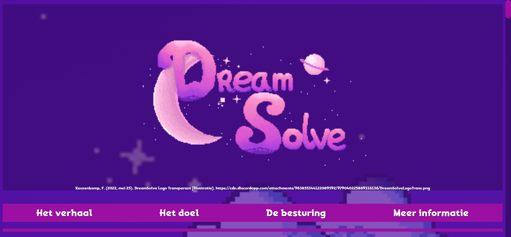
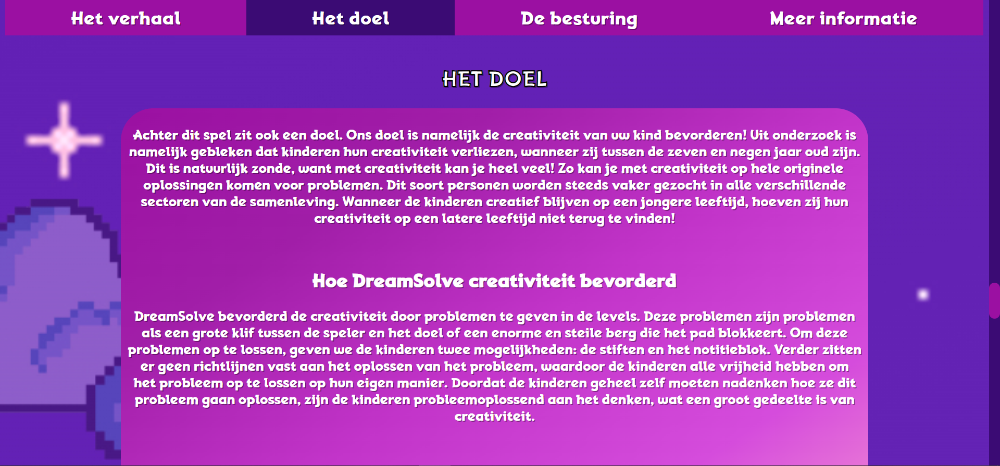
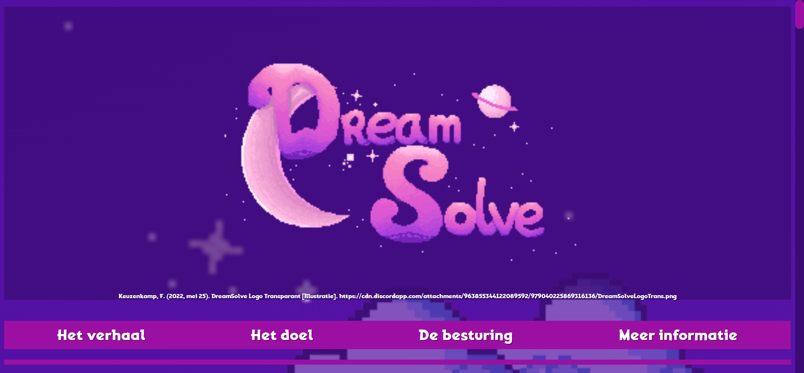
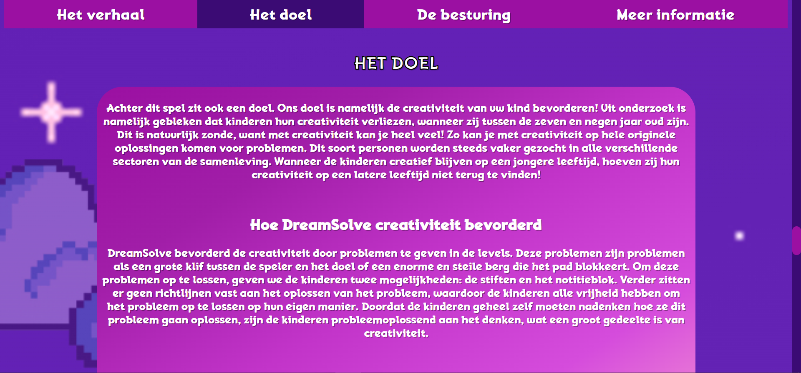

DreamSolve
DreamSolve is a prototype of a game concept designed to stimulate creativity in children. Developed in Typescript using the PIXI.js framework, the game follows three friends on an adventurous journey through a fantasy realm called DreamWorld.
The trio searches for a hidden treasure, but to find it, they must first recover thr four scattered pieces of the treasure map. Along the way they face playful obstacles -steep cliffs, towering mountains, and harmless but mysterious creatures.
To overcome these challenges, players can draw objects using colorful markers, such as a bridge to cross a river, or write words in a magical notebook that brings items to life -perhaps even a flying bathtub instead of a bridge.
Everything in DreamSolve is designed to encourage free thinking. There are no prescribed solutions; children can create anything they imagine. Players also cannot fail -failing into a ravine simply returns them to the start of the area without erasing their creations. This reinforces the idea that mistakes are part of the creative process and should never feel discouraging.
 



Project Context
DreamSolve was developed by a team of four students with the goal of combating the decline in creativity commonly observed in children between the ages of seven and nine. Research shows that young children gradually los creative confidence as they grow older -a loss that affects their ability to think originally and solve problems later in life.
Our aim was to design a game that allows children to think independently, invent solutions, and expirement freely without fear of failure. Through open-ended challenges and player-driven problem solving, DreamSolve helps nurture imagination and creativity in a playful and accesible way.
My Role
Within our four-person team, my role focused on both research and technical development. I conducted desk and field research on how to stimulate creativity in children aged 7 to 9, which helped shape the game's concept and design direction.
On the technical side, I researched the possibilities of PIXI.js and developed multiple prototypes to explore key gameplay systems. These prototypes included:
- Player movement, supporting both keyboard and controller input.
- Collision handling with the ground and other interactable objects.
- Audio implementation, including creating the sound effects and music.
- Level scrolling to lay the foundation for a larger world
These prototypes allowed the team to validate ideas quickly and ensured that the core mechanics were technically feasible witin PIXI.js.